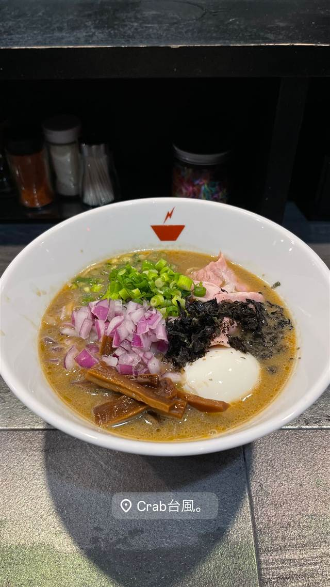

crab台風。
香港生まれの蟹そばを渡り蟹と豚骨で仕立てた一杯
Crab台風。
WHY GO
香港出店時代に店主が考案した蟹そばを渡り蟹と豚骨で仕立てた一杯
ここだけの一品
2007年に文京区茗荷谷で始まったラーメン店が、2012年に香港へ渡って3店舗に拡大する中で名物の「蟹そば」を考案。2018年に日本へ戻り人形町で再出発し、2024年に蒲田へ移転した、渡り蟹と豚骨を合わせた濃厚な蟹ラーメンの専門店。
TRIVIA
へえ、という話
- 名物の「蟹そば」は実は香港生まれ。店主が香港出店時代に考案したメニュー
- 茗荷谷→香港（荃湾、3店舗）→人形町→蒲田と流転してきた異色の経歴を持つ店
REVIEWS
みんなの声
3.55食べログ
「蟹スープの濃厚さと狭い店内」に注目
- ワタリガニと豚骨を合わせた濃厚なスープの風味を評価する声が多い
- 蟹そばは900円台と手頃な価格で、コスパの良さを評価する声が多い
- 客席は10席ほどと少なく、店内が狭いと感じる人もいるという声がある
食べログ 口コミ327件
| 創業 | 前身「ら〜めん台風」は2007年5月に文京区茗荷谷で開業 |
|---|---|
| 系譜 | 2012年12月に香港（荃湾）へ出店し3店舗まで拡大。2018年6月に日本へ戻り人形町で「crab台風。」として再出発し、2024年10月に蒲田へ移転 |
| 看板 | 蟹そば、蟹煮干しそば、辛蟹そば |
| こだわり | 渡り蟹と豚骨を合わせた濃厚な蟹×醤油スープ。蟹を丸ごと使ったフルボディな一杯に仕立てる |
| どこから | 23区の外れ・近郊 |
| 予算 | 昼 ～¥999 夜 ～¥999 |
| 定休日 | 日曜日 |
| 場所 | 蒲田駅 東京都大田区西蒲田7-67-12 1F |
| 注意 | 蒲田駅西口から徒歩1分、L字カウンター10席、店主のワンオペ営業、日曜定休 |
食べたもの：ラーメン / 和え麺